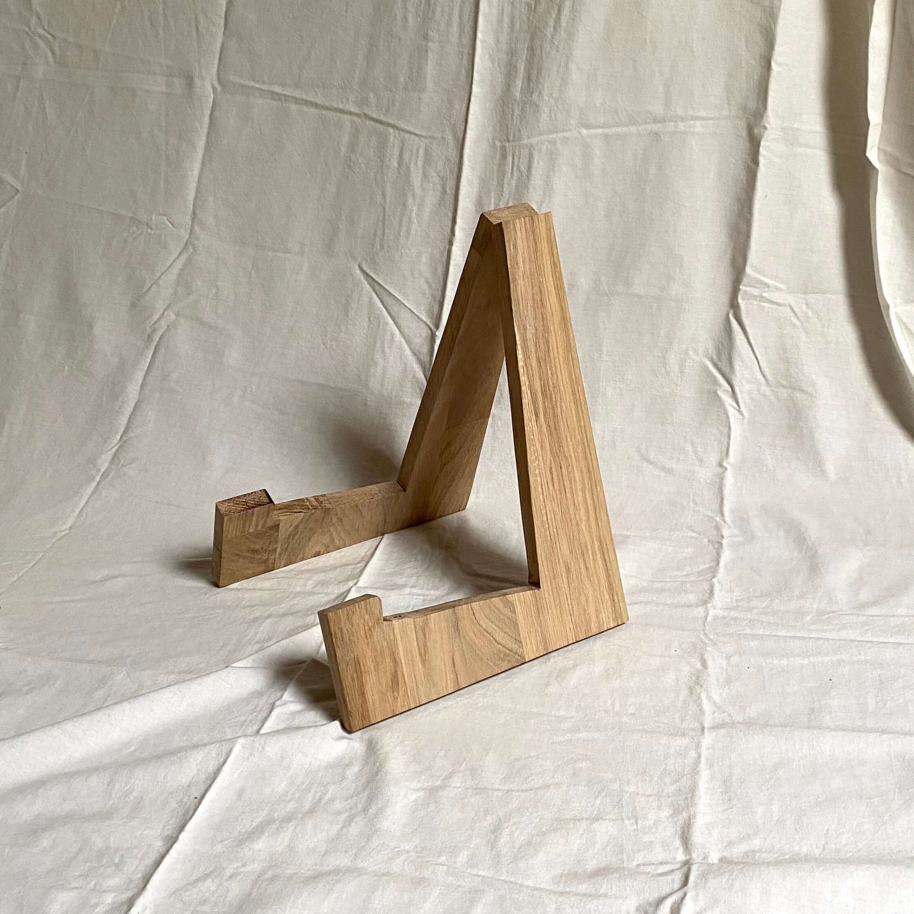
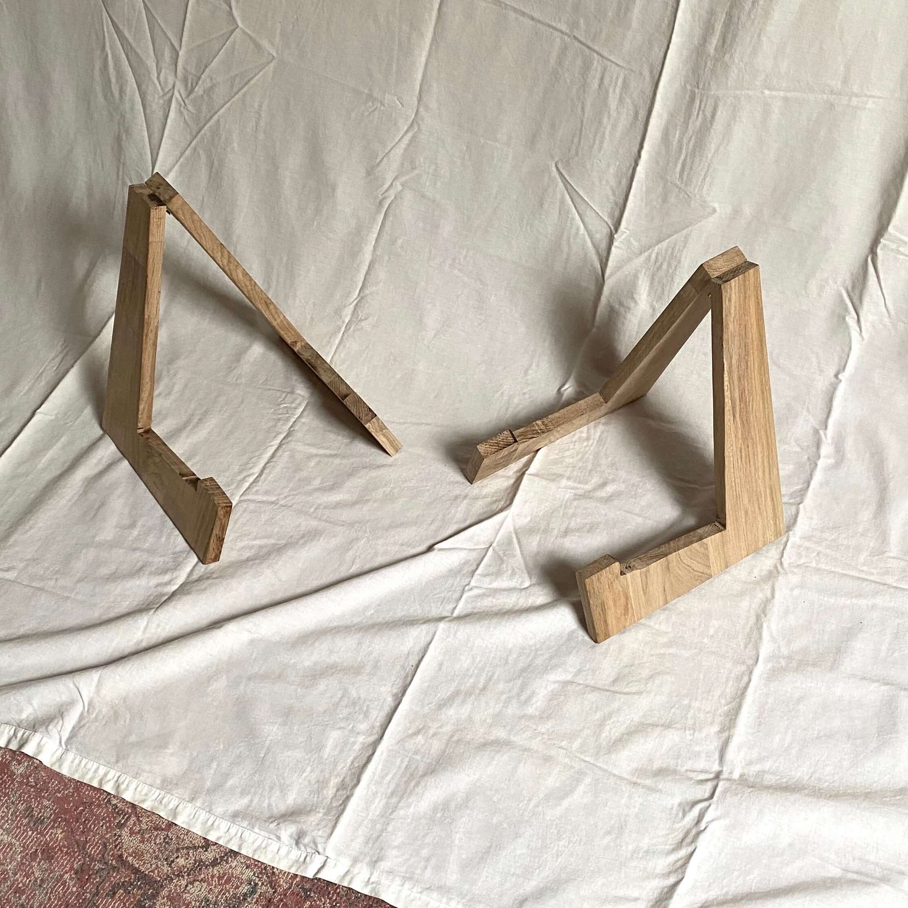
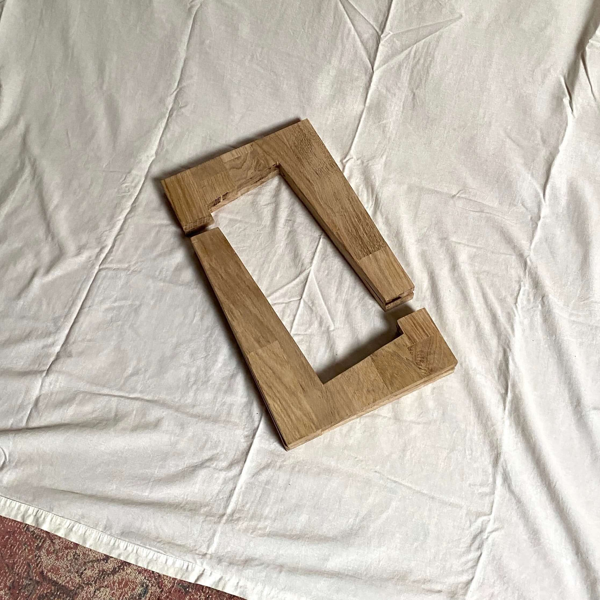
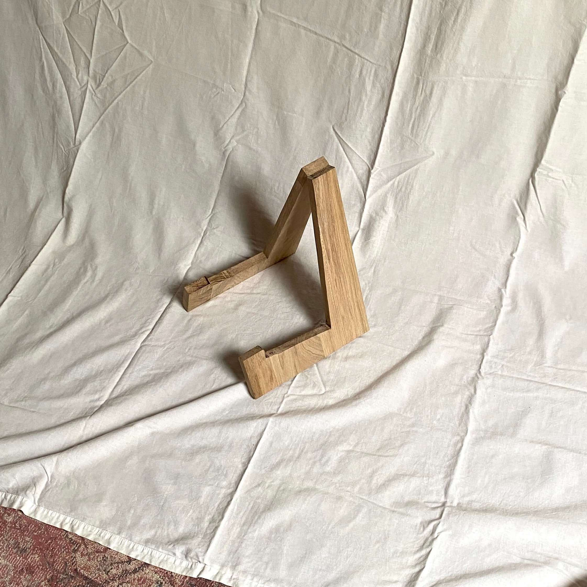

Objetos a medida
Encargos que he realizado para otras personas.
Iñaki, @fueledbyinto, me encargó un Cubo. Y yo encantado de hacerlo para él. Como era mi segundo cubo aproveché para mejorar un poco el proceso de fabricación, que aunque en apariencia es igual al original (como se puede ver en las fotos), el acabado es mucho mejor. Las mejoras fueron en la base y en la forma de anclar el casquillo.
Mil gracias Iñaki por hacer el proceso tan sencillo. También le incluí unas postales para conmemorar el objeto y su origen, y alguna cosa más que quedará entre nosotros...
Esta lámpara debía ir encima de la mesilla que hay un poco más abajo. De nuevo la forma era libre. Lo que quería la persona era que fuera pequeña, acogedora y cálida para usarla antes de dormir. Encontré la tulipa en un rastro al poco de recibir el encargo y decidí utilizarla. Para la base utilicé restos de la fabricación de la mesilla, por lo que tanto mesa como lámpara salen del mismo tablón.
Incluí cable textil rojo, un poco corto a petición de la persona ya que el enchufe está justo en donde va a ser colocada. En el cable puse una etiqueta.
Una mesilla de noche, tenía que ser en pino y con ciertas dimensiones para que entrase en un hueco al lado de la cama. La forma era libre así que decidí basarme en la primera mesilla que hice en mi vida (puedes verla en la página 2). La lámpara era para la misma persona.
Todas las uniones están hechas con espigas de madera de haya y son vistas. Tres en cada lado en la parte superior e inferior y dos en cada lado en la balda intermedia.
Dos soportes para guitarra acústica, hechos en madera de roble. Por la forma en la que tienen la visagra no hace falta un tope porque la parte superior del triángulo hace de tope y no se puede abrir más.
Paula de Álvaro me contactó para ver si podía hacer un objeto para ella y su nuevo estudio, inspirada por unas estanterías que hice (puedes verlas en la página /2) me sugirió si podía hacer algo similar pero más largo para libros. Dibujé unas ideas y se las envié y la que más nos convenció a ambos fue la de terminar la estantería con muchos semicírculos en la cara frontal. Hice a mano los 37 semicírculos, en casi 1 metro de estantería, en acero de 2 mm de espesor. De verdad que trabajar con Paula fue todo una bendición y me siento super agradecido de haber realizado mi primer objeto a medida para ella.
Incluí unas postales sobre la historia del material utilizado y el proceso (el acero lo obtuve de una antigua estantería) y un clip hecho a mano para mantenerlas juntas. La caja la decoré como se ve en la foto. La última foto está hecha por Paula, instalada ya en su nuevo estudio.